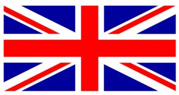

Cours d’anglais: vocabulaire, grammaire, prononciation, expressions. Bonjour et bienvenu sur le site de Kassy, the best site to become fluent in english. the first lesson will start de 28th of october 2023. if you have any question do not hesitate to contact me by mail : cassandra.zobel@yahoo.fr see you xoxo
Read this text The Battle of Settepozzi was fought in 1263 off the Greek island of Spetses between a Genoese–Byzantine fleet and a Venetian fleet (Venetian galley pictured). Genoa had been engaged in the War of Saint Sabas against Venice since 1256, and had been allied with the Byzantines since the Treaty of Nymphaeum in 1261. In 1263, 48 Genoese ships, en route to the Byzantine stronghold of Monemvasia, encountered 32 Venetian ships. A Genoese chronicle states that only two of the four admirals of the Genoese fleet and 14 of its ships took part in the attack, and were easily routed by the Venetians, who captured four vessels, including both flagships, and inflicted considerable casualties. The Venetian victory, and the demonstration of Genoese reluctance to confront them, had important political repercussions, as the Byzantines began to distance themselves from their alliance with Genoa and restored their relations with Venice, signing a five-year non-aggression pact in 1268. (Full article...)
COURS